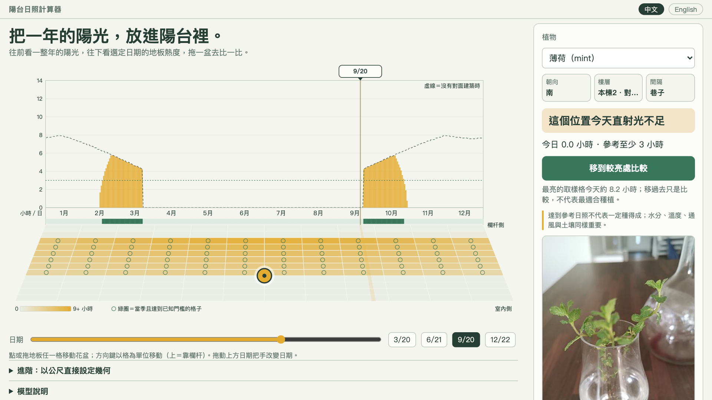
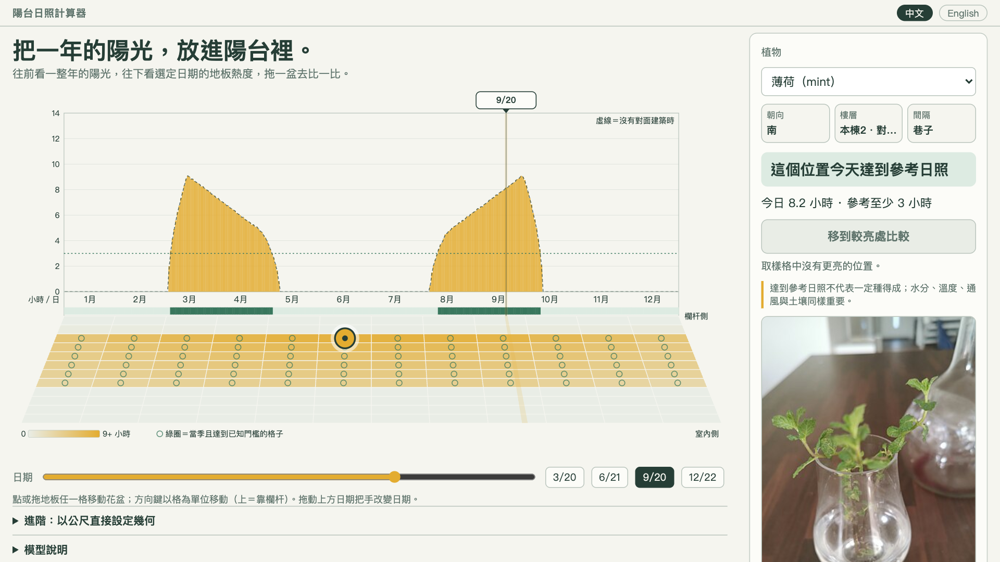
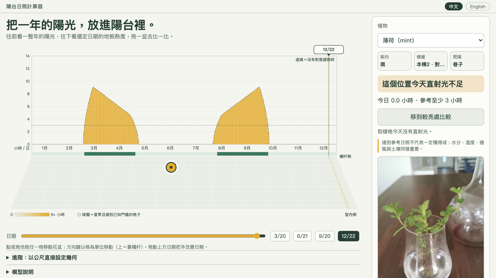

Almost every one has a balcony — which makes this an everyday question for millions of people:
“Does this corner get enough sun?”
One square ≈ 10,000 homes.
A pot moved half a metre can gain or lose a whole afternoon of direct light. Let's look at a year of it.



Simplified direct-sun reference for Taipei: sun position, parapet, awning, side walls and one building across. Not a growing guarantee.